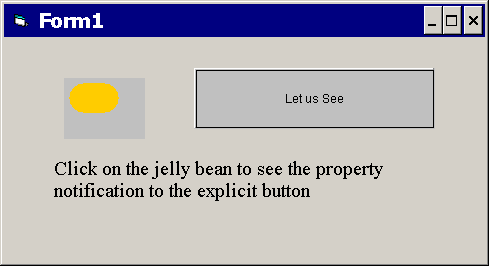
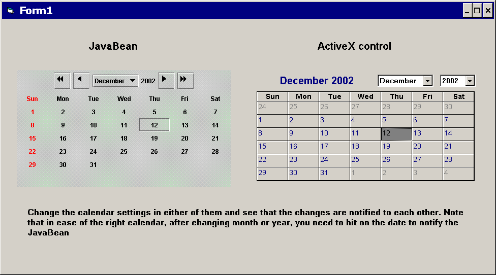

어플리케이션의 예를 2 개 가리킵니다.
이 어플리케이션은,BoundPropTest,JavaBeans 버튼, 및 JellyBean Bean 인, ActiveX 컨트롤로서 패키지 된 2 개의 Bean 를 사용하는 ActiveX 컨테이너에 의해 구성됩니다. 이 어플리케이션은 버튼이 JellyBean 를 사용하는 청취자로서 등록되어 있기 위해서(때문에) 동작합니다. JellyBean 가 클릭될 때마다, 버튼은 통지를 받아 버튼의 텍스트를 변경하는 코드가 불려 갑니다. 이 어플리케이션,boundprop.exe,BoundPropTest.dll, 및 JellyBean.dll 의 자원은, 이 문서의 boundprop 서브 디렉토리에 있기 때문에, 주의 깊게 설정해 실행해 주세요.
사용의 컴퓨터로 어플리케이션을 실행하려면 ,BoundPropTest.dll 및 JellyBean.dll 를, 컴퓨터의 <jre_home>\axbridge\bin 에 카피합니다. 양쪽 모두의 . dll 파일을 regsvr32.exe 를 사용해 등록합니다. 다음에 boundprop.exe 를 실행합니다. 다음과 같은 표시가 이루어집니다.

달력 어플리케이션도 같습니다. ActiveX 컨트롤 달력과 JavaBean 달력을 사용하는 ActiveX 컨테이너로부터 구성됩니다. 이 어플리케이션에서는, 양쪽 모두의 컴퍼넌트가 청취자로서 서로 등록됩니다. 1 개의 달력에서의 변경은, 변경의 통지를 사용해 다른 달력에 반영됩니다. 어플리케이션 cal.exe 및 JCalendarPanel.dll 의 자원은, 이 문서의 cal 서브 디렉토리에 있기 때문에, 주의 깊게 설정해 실행해 주세요. JCalendarPanel.dll 를 <jre_home>\axbridge\bin 에 카피해 등록해,cal.exe 를 실행합니다. 다음과 같은 표시가 이루어집니다.
